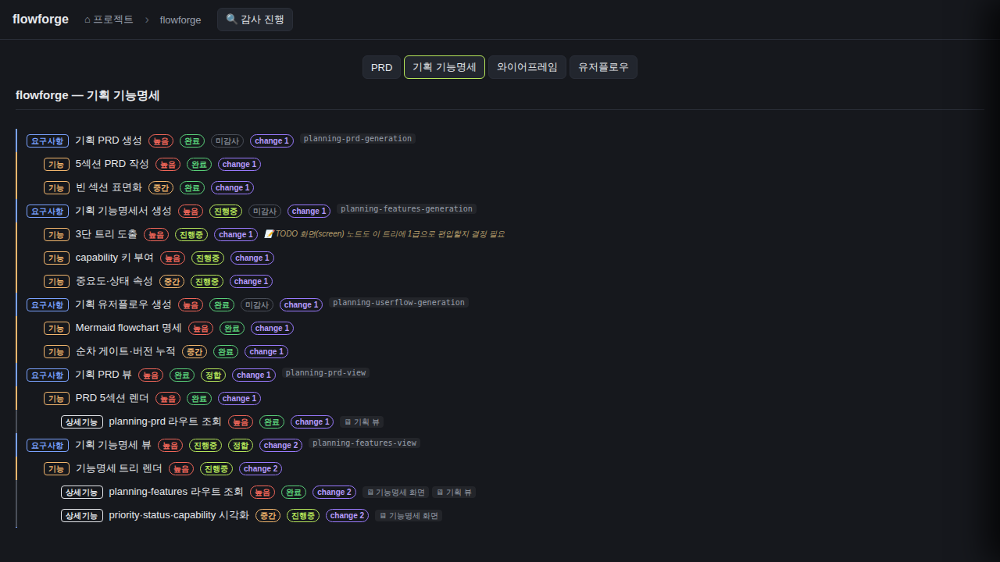
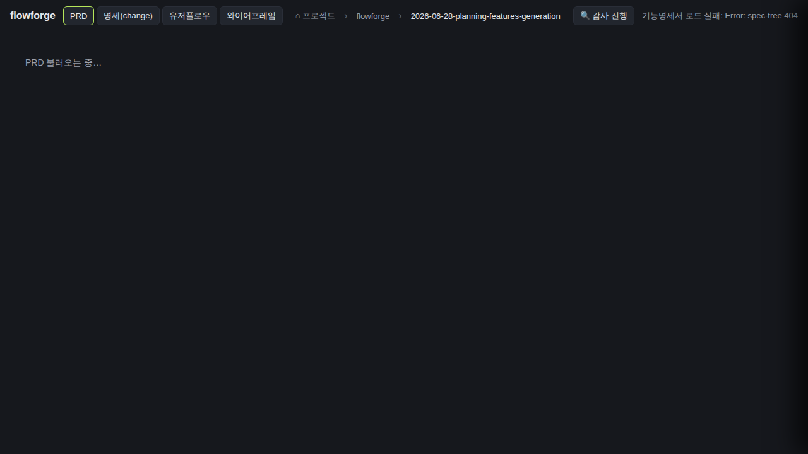
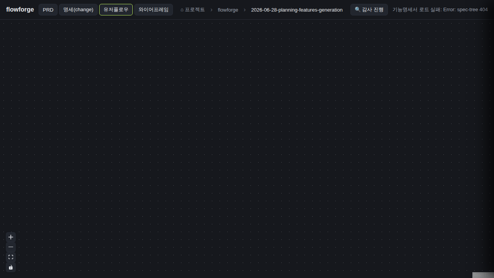
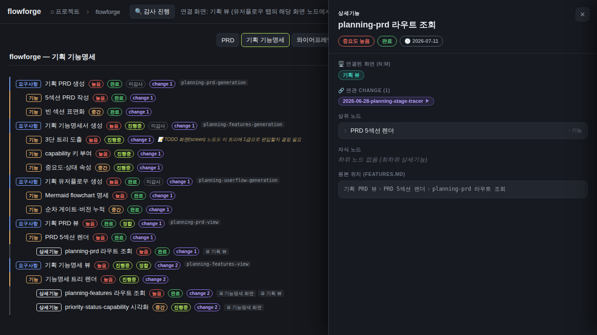

검증일: 2026-07-12T14:15:00+09:00 · 환경: server(jest/curl/typecheck) + web(browse) — 재바인딩(소스 무변경) · run: run-20260712-1415 · commit d3df39e7 (dirty)
PASS 14 · FAIL 0 · 검증 안 함 0 · SKIPPED 0
| Requirement | Scenario | Layer | 검증 수단 | 탐지 근거(basis) | 결과 | 증거 |
|---|---|---|---|---|---|---|
| [feature-list-view] 기능명세 뷰가 들여쓴 트리/리스트로 렌더된다 | 기능명세 뷰가 다이어그램이 아니라 리스트로 렌더된다 | web | browse로 flowforge 기획 '기획 기능명세' 탭 열어 DOM 확인: [data-testid=feature-list] 존재, [data-testid=feature-list-item] 53개, .react-flow 개수 0(캔버스 노드-엣지 다이어그램 없음). 요구사항>기능>상세기능이 --feature-depth(0/1/2)로 들여쓰기. | web 레이어(browse 실픽셀) — [data-testid] + getComputedStyle('--feature-depth') 관측 | ✓ PASS |  |
| [feature-list-view] 기능명세 뷰가 들여쓴 트리/리스트로 렌더된다 | 두 진입점 모두 리스트로 전환된다(다이어그램 잔존 0) | web | 정적: FeatureNode.tsx 삭제(파일 부재), featureTreeAdapter는 toFeatureTreeList만 export(toFeatureFlow/dagre 제거), nodeTypes={spec,specTree}에 feature 노드타입 없음. FeatureTree는 planning 진입점에서 FeatureListView(App.tsx:1036)로만 렌더되고, change 계보는 별도 capability(specTree=change spec.md). 남은 ReactFlow 인스턴스(d-spec/d-flow)는 FeatureTree 아님. 라이브: 기획 기능명세 탭 .react-flow 0. | web(static grep + browse 실픽셀) — FeatureNode 부재·nodeTypes에 feature 없음·라이브 리스트 .react-flow 0 | ✓ PASS | |
| [feature-list-view] 리스트가 다이어그램의 표시 정보를 무손실로 보존한다 | 뱃지·칩·태그가 리스트 항목에 그대로 표시된다 | web | browse로 리스트 항목 텍스트 관측: 타입태그(요구사항/기능/상세기능), priority(높음/중간), status(완료/진행중), audit(미감사/정합), capability 칩(planning-prd-generation 등), change 칩(change 1/2), 메모(📝 TODO...) 모두 렌더. 스크린샷 03에 시각 확인. | web(browse 실픽셀 + DOM 텍스트) | ✓ PASS | |
| [feature-list-view] 리스트가 다이어그램의 표시 정보를 무손실로 보존한다 | 상세기능의 연결화면 칩이 화면 레지스트리와 같은 id로 붙는다 | web | browse: 상세기능 항목 .feature-list-screen-chip 라벨(예: '🖥 기능명세 화면','🖥 기획 뷰') 관측. 교차확인: GET /api/docs/flowforge/planning-screens → labels=['프로젝트 카드 그리드'(grid),'기획 뷰'(skeleton),'기능명세 화면'(features)]. 칩 라벨이 레지스트리 라벨과 정확히 일치 → 동일 id 조인(회귀 0). | web(browse 실픽셀 칩) × server(planning-screens API 골든) 교차확인 | ✓ PASS | |
| [ia-removal] IA 뷰가 산출물에서 제거된다 (5종→4종) | change 뷰에 IA 탭이 없다 | web | browse로 change views 진입 후 header 탭 관측: [PRD, 명세(change), 유저플로우, 와이어프레임] — 정확히 4개, 'IA 트리' 없음. | web(browse 실픽셀 — header 버튼 텍스트) | ✓ PASS |  |
| [ia-removal] IA 뷰가 산출물에서 제거된다 (5종→4종) | planning 뷰에 화면 구조(IA) 탭이 없다 | web | browse로 flowforge 기획(planning) 뷰 plan-tabs 관측: [PRD, 기획 기능명세, 와이어프레임, 유저플로우] — 정확히 4개, '화면 구조'(IA) 없음. | web(browse 실픽셀 — [data-testid=plan-tabs] 버튼) | ✓ PASS | |
| [ia-removal] IA 뷰가 산출물에서 제거된다 (5종→4종) | IA 컴포넌트·어댑터·상태·토글이 코드에서 제거된다(dead reference 0) | server | 정적 코드 게이트(UI 픽셀 아님): web/src/{IANode.tsx,iaAdapter.ts} 파일 부재. App.tsx grep: iaNodes/iaEdges/planningIaNodes/iaVerbose/onIaNodeClick/IADetailPanel 라이브 참조 0(주석/CSS만 잔존). nodeTypes에 ia 없음. npm run typecheck(shared/server/web 3 workspaces) exit 0 → dead reference 0. | static(grep 파일 부재) + typecheck(빌드 dead-reference 게이트, 코드 레이어) | ✓ PASS | ls IANode.tsx/iaAdapter.ts → 부재. grep IANode/iaAdapter/iaVerbose/onIaNodeClick in web/src → 라이브 코드 0(SpecTreeNode.tsx 주석·styles.css 클래스명만). npm run typecheck TYPECHECK_EXIT=0. |
| [ia-removal] IA 서버 빌더와 라우트가 제거된다 | IA 라우트가 더 이상 응답하지 않는다(404 미존재) | server | 라이브 curl: GET /api/docs/flowforge/planning-ia → 404. GET /api/changes/implement-ios-app/ia → 404, /api/changes/server-foundation-auth/ia → 404. 실제 존재하는 change id로도 404 = 핸들러 미등록. | server(라이브 curl HTTP status) | ✓ PASS | curl -o /dev/null -w %{http_code}: planning-ia=404, changes/implement-ios-app/ia=404, changes/server-foundation-auth/ia=404. graph.ts 주석 'IA 라우트(/api/changes/:id/ia) 제거'. |
| [ia-removal] IA 서버 빌더와 라우트가 제거된다 | IA 서버 빌더 파일이 제거된다(dead import 0) | server | 정적: server/src/parser/{iaBuilder.ts,planningIaBuilder.ts} 파일 부재, shared/src/ia-types.ts 부재. server jest 528/528 통과(41 suites) — planningIaBuilder.test.ts 부재이며 dead import 0으로 전체 green. web/src에 fetchIA/fetchDocsPlanningIa 부재(api.ts엔 fetchPlanningScreens만). | static(파일 부재) + server jest(빌드·import 게이트) | ✓ PASS | ls iaBuilder.ts/planningIaBuilder.ts/ia-types.ts → 부재. server jest: 41 suites, 528 tests PASS(JEST_ALL_EXIT=0). api.ts grep fetchIA/fetchDocsPlanningIa → 0(fetchPlanningScreens만 남음). |
| [ia-removal] IA 제거가 화면 id 데이터·파싱을 건드리지 않는다 (불변식) | 화면 id 파싱이 IA 제거 후에도 동작한다(화면 id 골든 회귀 0) | server | server jest docs.planning: 'GET /planning-screens' 8/8 PASS — 화면목록 2개+링크 픽스처에서 {screens,links} 200, 화면목록 없는 프로젝트 빈 배열 200(빈값), 미존재 프로젝트 404(에러경로), 경로조작(..) 404(특수문자/보안). 라이브 curl planning-screens = {screens:[grid,skeleton,features], links:[...]} 정상. | server(jest 골든 + 라이브 curl) | ✓ PASS | jest docs.planning: 8 passed(planning-screens 4 + audit 4). 라이브 curl planning-screens → {screens:[{id:grid},{id:skeleton},{id:features}],links:[3]}. IA 제거 전/후 동일(골든). |
| [ia-removal] IA 제거가 화면 id 데이터·파싱을 건드리지 않는다 (불변식) | 유저플로우·와이어의 화면 id 조인이 유지된다 | web | browse: 기능명세 상세기능 연결화면 칩이 screenRegistry 라벨과 동일 id로 표시(R2-S4에서 교차확인). 유저플로우 탭 진입 시 ReactFlow 마운트·런타임 에러 0. 조인키 데이터원(screenRegistry/planning-screens) 불변(R2 라우트 골든). | web(browse) + server(planning-screens 불변) | ✓ PASS |  |
| [ia-removal] IA 제거가 화면 id 데이터·파싱을 건드리지 않는다 (불변식) | feature→screen 딥링크가 IA 부재로 깨지지 않는다 | web | browse: 기능명세 상세 패널의 연결화면 칩(.feature-detail-screen '기획 뷰') 클릭 → 상태바 '연결 화면: 기획 뷰 (유저플로우 탭의 해당 화면 노드에서 상호참조를 볼 수 있습니다)' 표시. 앱 alive, console app-error 0. 구 IA 딥링크 타깃 제거 → no-op/안내 처리(D4). | web(browse 클릭 + console --errors) | ✓ PASS |  |
| [view-labels] 두 계보의 '기능명세서' 레이블이 UI에서 구분된다 | change 탭과 planning 탭 레이블이 서로 다르다 | web | browse: change 뷰 탭='명세(change)'(App.tsx:945), planning 뷰 탭='기획 기능명세'(App.tsx:998) — 두 레이블 문자열이 서로 다름. 둘 다 그냥 '기능명세서'로 표기되지 않음. 라이브 header/plan-tabs로 확인. | web(browse 실픽셀) + static(App.tsx 레이블 리터럴) | ✓ PASS | |
| [view-labels] 두 계보의 '기능명세서' 레이블이 UI에서 구분된다 | 계보 출처가 드러난다 | web | '명세(change)'는 change 계보(openspec-propose의 spec.md), '기획 기능명세'는 planning 계보(openspec-plan의 features.md)를 레이블로 식별 가능하게 한다. 두 탭이 서로 다른 데이터원(specTree vs featureTree)을 렌더하며 UI 레이블로 구분됨. | web(browse 실픽셀) + static(specTree=change spec.md, featureTree=planning features.md 데이터원 분리) | ✓ PASS |
| Requirement | null | 빈값 | 잘못된타입 | 경계값 | 에러경로 | 동시성 | 대량 | 특수문자 | 판정 |
|---|---|---|---|---|---|---|---|---|---|
| [feature-list-view] 기능명세 뷰가 들여쓴 트리/리스트로 렌더된다 | ✓ | ✓ | N/A | ✓ | ✓ | N/A | ✓ | N/A | ✓ 충분 |
| [feature-list-view] 리스트가 다이어그램의 표시 정보를 무손실로 보존한다 | ✓ | ✓ | N/A | ✓ | ✓ | N/A | ✓ | ✓ | ✓ 충분 |
| [ia-removal] IA 뷰가 산출물에서 제거된다 (5종→4종) | N/A | N/A | N/A | ✓ | N/A | N/A | N/A | N/A | ✓ 충분 |
| [ia-removal] IA 서버 빌더와 라우트가 제거된다 | N/A | N/A | N/A | ✓ | ✓ | N/A | N/A | N/A | ✓ 충분 |
| [ia-removal] IA 제거가 화면 id 데이터·파싱을 건드리지 않는다 (불변식) | ✓ | ✓ | N/A | ✓ | ✓ | N/A | N/A | ✓ | ✓ 충분 |
| [view-labels] 두 계보의 '기능명세서' 레이블이 UI에서 구분된다 | N/A | N/A | N/A | ✓ | N/A | N/A | N/A | N/A | ✓ 충분 |
✓=covered · N/A=해당없음(사유 hover) · ✗=missing. happy-path만이면 검증 불충분 → 최종 FAIL 차단.
| Layer | 상태 | ran | passed | failed | 근거/사유 |
|---|---|---|---|---|---|
| server | ✓ PASS | 4 | 4 | 0 | 라이브 curl(IA 라우트 404 3종, planning-screens 정상) + jest(docs.planning 8/8, 전체 528/528) + typecheck exit 0 |
| web | ✓ PASS | 7 | 7 | 0 | browse 실픽셀 7 캡처(grid/skeleton/feature-list/change-tabs/spec/userflow/screenchip) + DOM 관측(react-flow 0, feature-list 53항목, 탭 4종, 칩 id 교차확인) + console app-error 0 |
✓ PASS 통과
archiveGate.open = true (PASS일 때만 true). verify.json이 이 값을 archive 게이트에 전달.
{kind=link}
{kind=link}
{kind=link}
{kind=link}